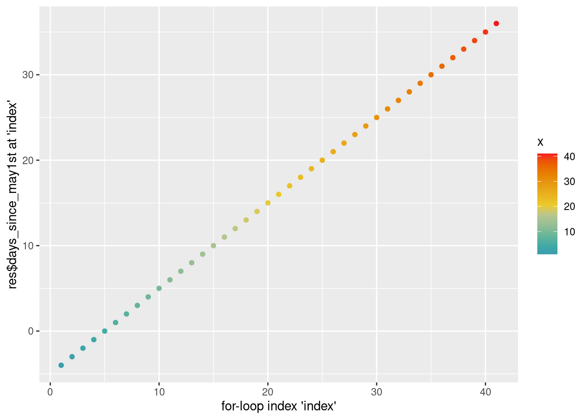
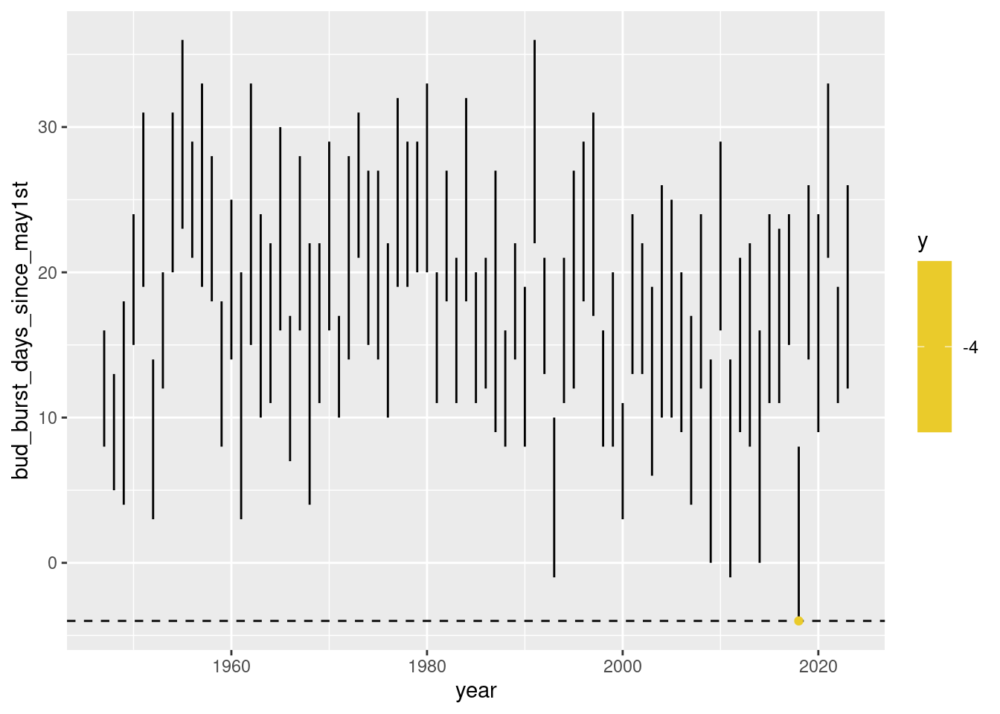
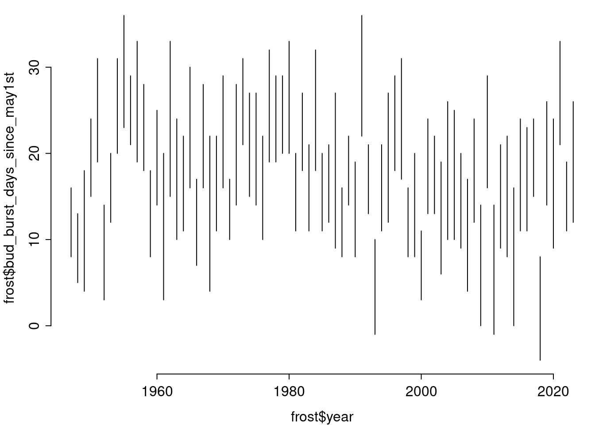
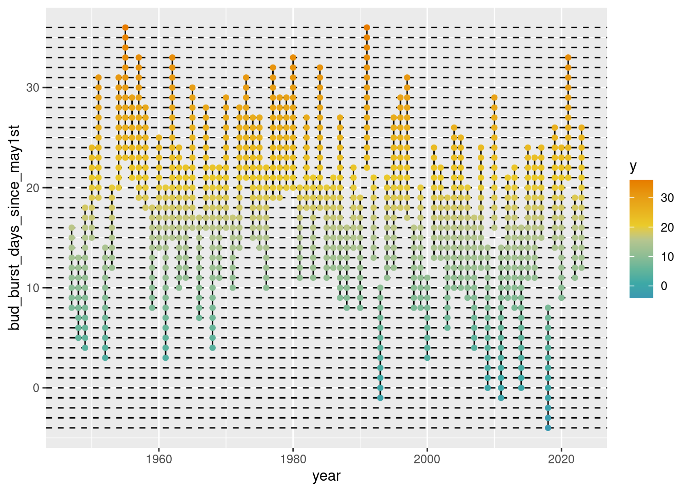
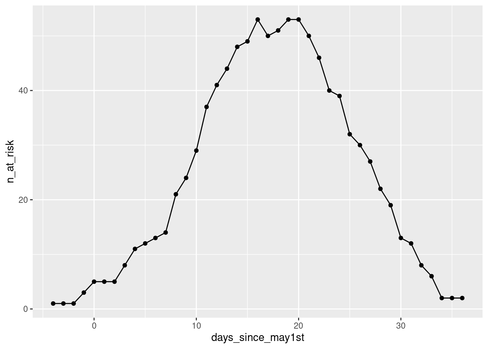
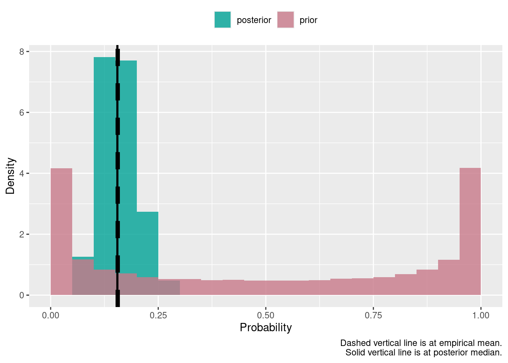
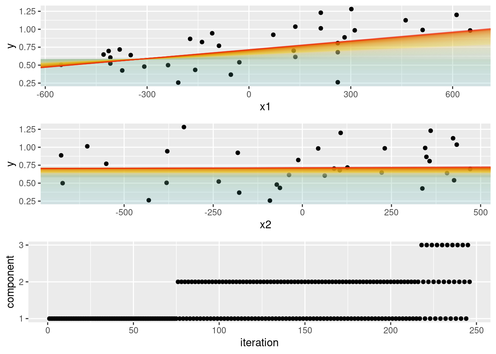

Introduction to R: Session 03
June 12, 2024 (Version 0.4)
All contents are licensed under CC BY-NC-ND 4.0.
1 Objectives of control structures.
‘Automation’ of the repetition of structurally identical commands.
- Repetition of a command – with objects remaining the same, or changing – with a predetermined or flexible number of repetitions.
- Conditional execution of various tasks.
- Generalization of tasks by defining functions.
2 Logical comparisons.
| Command | TRUE if: |
|---|---|
== |
Equality |
!= |
Inequality |
>, >= |
Left side greater than (or equal to) the right side |
<, <= |
Left side less than (or equal to) the right side |
%in% |
Is left side included in vector on right side? |
all()returnsTRUEif all elements of the vector areTRUE.any()returnsTRUEif at least one element of the vector isTRUE.is.na()andis.null()returnTRUEif the respective object (e.g. element of a vector) isNAorNULL.- A logical value can be negated with a preceding
!(e.g.!TRUEisFALSE) which()returns the index set (as an integer vector) if the logical comparison resulted inTRUE.
2.1 Exercises
is.na(drought$bair)
any(is.na(drought$bair))
drought$bair > 0
all(drought$bair > 0)
drought$bair > 1
any(drought$bair > 1)
all(drought$bair > 1)
which(drought$bair > 1)
drought$bair[which(drought$bair > 1)]
(tmp <- round(drought$bair, 1))
c(.8, 1.2) %in% tmp
c(.8, 1.2) %in% drought$bair
which(tmp %in% c(.8, 1.2))
drought$bair[which(tmp %in% c(.8, 1.2))]
tmp <- c(drought$bair[1:5], NA)
all(tmp > 0)
any(is.na(tmp))
which(is.na(tmp))
all(tmp[-which(is.na(tmp))] > 0)
mean(tmp)
mean(tmp, na.rm = T)3 Conditional execution
3.1 if () { } else { }
Usage:
if (condition) {
... ## Commands if condition is TRUE
} else {
... ## Commands if condition is FALSE
}TRUEorFALSEcondition necessary.- ‘if-else’-sequences can be nested within one another.
Applied example together with the next topic.
3.1.1 Exercises
a <- drought$bair[1]
if (a > 1) {
print("a is greater than 1.")
} else {
print("a is not greater than 1.")
}
index <- 2
tmp <- rep(NA, nrow(drought))
if (drought$bair[index] < 1) {
result <- "bair<1"
if (drought$elev[index] < 1000) {
tmp[index] <- paste0("1_", result, ",elev<1000")
} else {
tmp[index] <- paste0("2_", result, ",elev>=1000")
}
} else {
result <- "bair>=1"
if (drought$elev[index] < 1000) {
tmp[index] <- paste0("3_", result, ",elev<1000")
} else {
tmp[index] <- paste0("4_", result, ",elev>=1000")
}
}
tmp3.2 for-loops
for loops often offer a simple and pragmatic way to complete steps in data management / preparation.
Usage:
- New object
indexruns all elements invector. indexremains constant during... index ...indexjumps to the next (if available) value ofvectorafter running through... index ....indextakes each value ofvectoronce.- The number of iterations of
... index ...is determined by the length ofvector.
3.2.1 Exercises
library("ggplot2")
tmp1 <- frost$bud_burst_days_since_may1st
tmp2 <- frost$end_1st_dev_stage_days_since_may1st
days_since_may1st <- min(tmp1):max(tmp2)
rm(tmp1, tmp2)
p <- ggplot(data = frost, aes(x = year, y = bud_burst_days_since_may1st)) +
ylim(range(days_since_may1st))
for (index in 1:nrow(frost)) {
tmp_x <- rep(frost$year[index], times = 2)
tmp_y <- c(frost$bud_burst_days_since_may1st[index],
frost$end_1st_dev_stage_days_since_may1st[index])
p <- p + geom_line(data = data.frame(x = tmp_x, y = tmp_y),
aes(x = x, y = y))
}
p3.3 Example of a for loop with if
The goal of this example is to get to know which day in May is the one at which a young Douglas fir was most often in the first development stage.
As a preparation, we nee to set up a data-frame as the object that will carry the result:
tmp1 <- frost$bud_burst_days_since_may1st
tmp2 <- frost$end_1st_dev_stage_days_since_may1st
days_since_may1st <- min(tmp1):max(tmp2)
rm(tmp1, tmp2)
res <- data.frame(days_since_may1st = days_since_may1st,
n_at_risk = NA)3.3.1 Illustrating the loop index
The for-loop will run through our resulting data-frame res, line by line.
We can try and illustrate this with the following graph, where the x-axis carries the values of the loop-index, and the y-axis the value of the days_since_may1st variable that will be taken in each of the loop’s ... index ... circles.
##
## Attache Paket: 'colorspace'## Das folgende Objekt ist maskiert 'package:spatstat.geom':
##
## coordsggplot(data = data.frame(x = 1:nrow(res),
y = res$days_since_may1st),
aes(x = x, y = y)) +
geom_point(aes(color = x)) +
scale_color_continuous_divergingx(pal = "Zissou", mid = nrow(res)/2) +
labs(x = "for-loop index 'index'", y = "res$days_since_may1st at 'index'")
3.3.2 An iteration ‘by hand’
We can run a first iteration by hand that does what ... index ... should do in our loop:
compare the current – at index = 1– res$days_since_may1st value to each of the first development stage periods that are given by frost$bud_burst_days_since_may1stand frost$end_1st_dev_stage_days_since_may1st.
If any of those periods covers our current day, than at least a value of 1 will result for res$n_at_risk[index].
index <- 1
# re-use 'p' from for-loop exercises
p <- p + geom_hline(yintercept = res$days_since_may1st[index], linetype = 2)
## boolean 1 and 2:
bool1 <- frost$bud_burst_days_since_may1st <= res$days_since_may1st[index]
bool2 <- frost$end_1st_dev_stage_days_since_may1st >= res$days_since_may1st[index]
## if any ... else ...
if (any(bool1 & bool2)) {
which_true <- which(bool1 & bool2)
p <- p + geom_point(data = data.frame(x = frost$year[which_true],
y = rep(days_since_may1st[index],
times = length(which_true))),
aes(x = x, y = y, color = y))# , col = paint[index], pch = 16)
res$n_at_risk[index] <- length(which_true)
} else {
res$n_at_risk[index] <- 0
}
p + scale_color_continuous_divergingx(pal = "Zissou", mid = nrow(res)/2)
3.3.3 The ‘full’ loop
Now we just take what we have implemented before and – by using for (index in 1:nrow(res)) { effortlessly run through all the lines of res.
par(mar = c(3, 3, .1, .1), mgp = c(2, .5, 0), tcl = -.3)
plot(frost$year, frost$bud_burst_days_since_may1st, type = "n",
ylim = range(days_since_may1st), bty = "n")
for (index in 1:nrow(frost)) { ## here, the uninteresting loop
tmp_x <- rep(frost$year[index], times = 2)
tmp_y <- c(frost$bud_burst_days_since_may1st[index],
frost$end_1st_dev_stage_days_since_may1st[index])
lines(x = tmp_x, y = tmp_y)
}
for (index in 2:nrow(res)) { ## let 'index' begin here at 2 since index = 1 already perfomr
p <- p + geom_hline(yintercept = res$days_since_may1st[index], linetype = 2)
## boolean 1 and 2:
bool1 <- frost$bud_burst_days_since_may1st <= res$days_since_may1st[index]
bool2 <- frost$end_1st_dev_stage_days_since_may1st >= res$days_since_may1st[index]
## if any ... else ...
if (any(bool1 & bool2)) {
which_true <- which(bool1 & bool2)
p <- p + geom_point(data = data.frame(x = frost$year[which_true],
y = rep(days_since_may1st[index],
times = length(which_true))),
aes(x = x, y = y, color = y))# , col = paint[index], pch = 16)
res$n_at_risk[index] <- length(which_true)
} else {
res$n_at_risk[index] <- 0
}
}
p + scale_color_continuous_divergingx(pal = "Zissou", mid = nrow(res)/2)

3.4 while-loops.
while loops are used less often in data management / preparation, but are more likely to be found in computationally intensive applications (e.g. for optimization).
Usage:
index <- k ## 'k' here has to be smaller than 'K' in next line.
while (index < K){
...
index <- index + 1
}- The commands that ’
...stands for, and the following line, are repeated as long as the condition isTRUE(i.e. here as long ask\(<\)K). - flexible number of repetitions.
- stops immediately after the condition –
index < Kin the above usage example – is no longer met, ie. isFALSEfor the first time.
The following two examples are two applications of a while-loop that came into my mind. They might be a bit too distracting from the goals of ‘Introduction to R’, so feel completely free to skip them …
3.4.1 Example 1
This example does Bayesian inference for a simple one parameter model – estimation of an unknown quantity which is a proportion between \(0\) and \(1\) – by filtering the prior proposals that lead to the simulated data that are equal to the data sample – the likelihood works as some sort of sieve here.
## frost$n_frost > 0.5
## FALSE TRUE
## 65 12prior <- post <- NULL
while (accepted < 1000) {
p <- rbeta(n = 1, shape1 = 1/3, shape2 = 1/3) ## http://dx.doi.org/10.1214/11-EJS648
prior <- c(prior, p)
y_tilde <- sample(x = c(TRUE, FALSE), size = nrow(frost), replace = T,
prob = c(p, 1 - p))
if (sum(y_tilde) == sum(frost$n_frost > .5)) {
accepted <- accepted + 1
post <- c(post, p)
}
}
length(post)## [1] 1000## [1] 107145## [1] 0.009333147## Min. 1st Qu. Median Mean 3rd Qu. Max.
## 0.05909 0.13177 0.16001 0.16135 0.18938 0.29381## Min. 1st Qu. Median Mean 3rd Qu. Max.
## 0.00000 0.08274 0.50072 0.50018 0.91782 1.00000tmp <- rbind(data.frame(value = post,
k = "posterior"),
data.frame(value = prior,
k = "prior"))
ggplot(data = tmp, aes(x = value, group = k, fill = k)) +
geom_histogram(aes(y = after_stat(density)), alpha = .8, position = "identity",
binwidth = .05, center = .025) +
scale_fill_discrete_qualitative(pal = "Dark 2", rev = T) +
theme(legend.position = "top") +
geom_vline(xintercept = sum(frost$n_frost > .5) / nrow(frost), linewidth = 2, linetype = 2) +
geom_vline(xintercept = median(post), linewidth = 1, linetype = 1) +
labs(x = "Probability", y = "Density", fill = NULL,
caption = "Dashed vertical line is at empirical mean.\nSolid vertical line is at posterior median.")
3.4.2 Example 2
This example implements a very primitive component-wise ‘L[2]-loss descent’ boosting (comparable to what add-on package mboost implements for a normally distributed response).
set.seed(123)
x1 <- drought$elev - mean(drought$elev)
x2 <- runif(nrow(drought), min = min(x1), max = max(x1))
x2 <- x2 - mean(x2)
y <- drought$bair
f_y_work <- function(y, x1, x2, b0, b1, b2){-1 * (-2*y + 2*(b0 + b1*x1 + b2*x2))}
b0 <- 0
b1 <- 0
b2 <- 0
crit_diff <- 1 ## initialize such that condition is true at beginning
crit_old <- sqrt(mean(c(y - (b0 + b1*x1 + b2*x2))^2))
component <- NULL
while (crit_diff > 0.0001) {
y_work <- f_y_work(y = y, x1 = x1, x2 = x2,
b0 = b0[length(b0)], b1 = b1[length(b1)],
b2 = b2[length(b2)])
lm_b0 <- lm(y_work ~ 1)
lm_b1 <- lm(y_work ~ -1 + x1)
lm_b2 <- lm(y_work ~ -1 + x2)
crit_b0 <- mean(lm_b0$residuals^2)
crit_b1 <- mean(lm_b1$residuals^2)
crit_b2 <- mean(lm_b2$residuals^2)
selected <- which.min(c(crit_b0, crit_b1, crit_b2))
update_weight <- rep(0, 3)
update_weight[selected] <- .01
b0 <- c(b0, b0[length(b0)] + update_weight[1] * coef(lm_b0))
b1 <- c(b1, b1[length(b1)] + update_weight[2] * coef(lm_b1))
b2 <- c(b2, b2[length(b2)] + update_weight[3] * coef(lm_b2))
component <- c(component, selected)
crit_new <- sqrt(mean(c(y - (b0[length(b0)] +
b1[length(b1)] * x1 +
b2[length(b2)] * x2))^2))
crit_diff <- crit_old - crit_new ## Update!
crit_old <- crit_new
}
table(component)## component
## 1 2 3
## 155 81 10paint <- colorspace::divergingx_hcl(n = length(b0), pal = "Zissou")
paint_a <- colorspace::divergingx_hcl(n = length(b0), pal = "Zissou", alpha = .1)
p1 <- ggplot(data = data.frame(x1 = x1, y = y)) +
geom_point(aes(x = x1, y = y))
p2 <- ggplot(data = data.frame(x2 = x2, y = y)) +
geom_point(aes(x = x2, y = y))
for (index in 1:length(b0)) {
p1 <- p1 + geom_abline(intercept = b0[index], slope = b1[index], color = paint_a[index])
p2 <- p2 + geom_abline(intercept = b0[index], slope = b2[index], color = paint_a[index])
}
cowplot::plot_grid(p1, p2,
ggplot(data = data.frame(iteration = 1:length(component),
component = as.numeric(as.factor(component)))) +
geom_point(aes(x = iteration, y = component)) +
scale_y_continuous(breaks = 1:3, minor_breaks = NULL),
ncol = 1)
3.5 apply-commands
An apply-command applies the same function to each of the elements of a data object.
This is usually done for taking the sum or calculating the arithmetic mean, or quantiles, of the columns or rows of a matrix.
There are different - but actually very similar – versions of appyly.
Usage:
apply(X, MARGIN, FUN, ...) ## For matrix X: Result is a list.
lapply(X, FUN, ...) ## For list X: Result is a list.
sapply(X, FUN, ...) ## For list X: Result is a vector or another
## Data object that the result might be 'simplified' to.applyapplies function (specified byFUN) to each element of the respective dimension (defined with argumentMARGIN) ofX.MARGINequals1for line-by-line, and2for column-wise execution....for further arguments toFUNCTION(same for every element ofX!).- For lists
X,MARGINcannot be selected because lists only have one dimension.
3.5.1 Exercises
A <- matrix(ncol = 5, nrow = 10, data = 1:50)
(B <- apply(A, MARGIN = 2, FUN = mean))
class(B)
colSums(A)/nrow(A)
apply(A, MAR = 2, FUN = sd)
(B <- apply(A, MARGIN = 2, FUN = summary))
class(B)
dimnames(B)
apply(drought, MARGIN = 2, FUN = function(x){sum(is.na(x))})
apply(drought[, 1:2], MARGIN = 2, FUN = mean)
apply(drought[, 1:2], MARGIN = 1, FUN = mean)
apply(frost, MARGIN = 2, FUN = function(x){sum(is.na(x))})
apply(frost[, c(1:2, 6:7)], MARGIN = 2, FUN = mean)
lapply(frost[, c(1:2, 6:7)], FUN = mean)
sapply(frost[, c(1:2, 6:7)], FUN = mean)3.6 plyr::ddply: ’split–apply–combine
‘split–apply–combine’ refers to a sequence of actions that is often needed for analyzing data:
- split: Split the data set according to the characteristics of one or a combination of several categorical variables,
- apply: Apply statistical methods (or functions like
mean(),length(), …) to each of these partial data sets, - combine: Manage all results in a common result object.
‘split–apply–combine’ with the function ddply from the package plyr (Wickham 2011):
- takes a dataframe (one of the
ds in the functions name) - returns a dataframe (the second
din the functions name)
Alternative: base R aggregate.
Usage:
library("plyr")
ddply(data,
variables = c("variable(s) to split data frame by"),
summarise,
output_variable1 = function1(input_variable1),
output_variable2 = function2(input_variable2),
...)library("plyr")
d_breaks_cut <- quantile(df$d, probs = seq(0, 1, by = 0.05))
df$d_cut <- cut(df$d, breaks = d_breaks_cut, include.lowest = T)
dd <- ddply(df, c("d_cut"), summarise,
n = length(h),
h_min = min(h),
h_q25 = quantile(h, probs = 0.25),
h_mean = mean(h),
h_q75 = quantile(h, probs = 0.75),
h_max = max(h))
head(dd)## d_cut n h_min h_q25 h_mean h_q75 h_max
## 1 [1.5,3.1] 86 1.9 2.900 3.389535 3.800 6.8
## 2 (3.1,4] 91 2.1 3.600 4.410989 5.050 7.5
## 3 (4,4.8] 86 3.2 4.200 4.995349 5.800 7.9
## 4 (4.8,5.4] 79 3.1 4.550 5.401266 6.050 10.1
## 5 (5.4,6.2] 93 3.4 5.200 6.311828 7.100 15.5
## 6 (6.2,6.9] 74 3.8 5.125 6.532432 7.775 9.83.7 Pragmatic Programming.
The primary aim of your R Code is that it does what you need it to do – without errors!
Faulty conclusions in your data analysis as a consequence of data handling errors are one of the worst things that can happen to you as a researcher.
Copy-paste sequences such as:
df[, 1] <- df[, 1] - mean(df[, 1]) / sd(df[, 1])
df[, 2] <- df[, 2] - mean(df[, 2]) / sd(df[, 2])
df[, 3] <- df[, 3] - mean(df[, 3]) / sd(df[, 3])
df[, 5] <- df[, 5] - mean(df[, 5]) / sd(df[, 1])
df[, 6] <- df[, 6] - mean(df[, 6]) / sd(df[, 6])are one of the main error source for R users / ‘beginners’ that don’t rely on ‘programming techniques’.
Loops are somehow ill-reputed, but whatever way of programming you find that get’s you towards errorless handling of your data, is perfect!
Therefore:
- Use loops as often as possible (‘upwards’: wherever you can replace long copy-paste chains with an errorless loop), but avoid loops as often as necessary (‘downwards’), because – very roughly said – loops read and write to the main memory in each iteration \(\rightarrow\) Vectorized programming reads and writes only once: many functions take vectors as arguments and are therefore (often) faster.
- Use an
applycommand if you want the function to do the same on every element. - But: Loops are simple and pragmatic and whoever masters them is already a king: It is better if R-Code gets something done slowly, but correct, than quickly, but wrong!
- Loops cannot be avoided in an iterative processes – but this is something you will rarely need!
4 Define your own functions.
Why should I be able to define my own functions?
- Functions generalize command sequences and make it easier and easier to try something out under many different argument values / dates / ….
- Functions keep the workspace clean (see next section on environments).
- Functions facilitate the reproducibility of analyzes.
- Functions make it easier for other users to access your work.
- As can be seen from the
apply()examples, it is very often necessary to be able to write your own little helper functions. Also for your own orientation: Always comment on the processes and steps in your code and in your functions to make it easier to understand the motivation and ideas behind it later.
- The general rules for naming objects also apply to function arguments.
- Arguments can have preset values (here
arg3andarg4) - The last argument
...(optional) is a special argument and can be used to pass unspecified arguments to function calls. - Arguments changed by
contentand objects created are in their own local environment. - The result is returned to the global environment with
return(result).
4.1 Naming conventions for arguments.
| Argument name | Inhalt |
|---|---|
data |
Dataframe |
x, y, z |
Vectors (most often with numerical elements) |
n |
Sample size |
formula |
Formula object |
| … | … |
- Use function and argument names that are based on existing R functions.
- Make arguments as self-explanatory as possible by name.
4.2 content and result.
The content block:
- Should make it possible to carry out many similar – but different – calculations and therefore define as few objects as possible to ‘fixed values’: alternatively, always try to define arguments with default values.
- Falls back on the higher-level environment (or environments, if necessary) if it cannot find an object in the local environment (this is known as scoping).
The result object:
- Can be of any possible R object class (vector, list, data set, function (a function that itself returns a function is called closure), …).
- Is generated by calling the function and stored in the global environment.
- All other objects are no longer ‘visible’ from the global environment.
4.3 Exercises
4.3.1 Environments and scoping
rm(list = ls())
ls()
f <- function(x){
y <- 2
print(ls())
y <- y + z ## f will search for z in the parent (global, here) environment.
print(ls())
return(x + y)
}
x <- 1; z <- 3
f(x = x) ## f will find z:
## -> although we don't explicitly use it as an argument in the local environment
## passed to f.
y ## We cannot fall back on y from the higher-level environment.## Error in eval(expr, envir, enclos): Objekt 'y' nicht gefunden4.4 Real-world helpers
4.4.1 drop_ghosts
This function drops ghosts, ie. it removes levels of a factor variable for which the absolute frequency in the data is \(0\).
drop_ghosts <- function(x, lev = NULL) {
if (is.null(lev)) {
as.factor(as.character(x))
} else {
if (length(unique(x)) != length(lev)) {
stop("Please provide levels of correct length!")
}
factor(as.character(x), levels = lev)
}
}Validation:
## [1] Beech Beech Beech Beech Beech Spruce Spruce Spruce Spruce Spruce
## Levels: Beech Spruce## [1] Beech Beech Beech Beech Beech
## Levels: Beech Spruce## [1] Beech Beech Beech Beech Beech
## Levels: Beech## Error in drop_ghosts(x = sub$species, lev = c("Beech", "Oak")): Please provide levels of correct length!## [1] Beech Oak
## Levels: Beech Oak Spruce## [1] Beech Oak
## Levels: Beech Oak## [1] Beech Oak
## Levels: Oak Beech4.4.2 overlap_seq
This function generates an overlapping sequence, ie. it takes a numeric variable x and a numeric step-length delta and calculates a sequence at multiples of delta that has a minimum below or just at the minumum of x, and a maximum beyond or just at the maximum of x.
overlap_seq <- function(x, delta) {
tmp <- x %/% delta
tmp2 <- x %% delta
if (tmp2[which.max(x)] == 0) {
result <- delta * (min(tmp, na.rm = T):max(tmp, na.rm = T))
} else {
result <- delta * (min(tmp, na.rm = T):(max(tmp, na.rm = T) + 1))
}
return(result)
}Validation:
## [1] 0 100 200 300## [1] 0 100 200 300## [1] 0 100 200 300## [1] -100 0 100 200 300 400References
Private webpage: uncertaintree.github.io↩︎